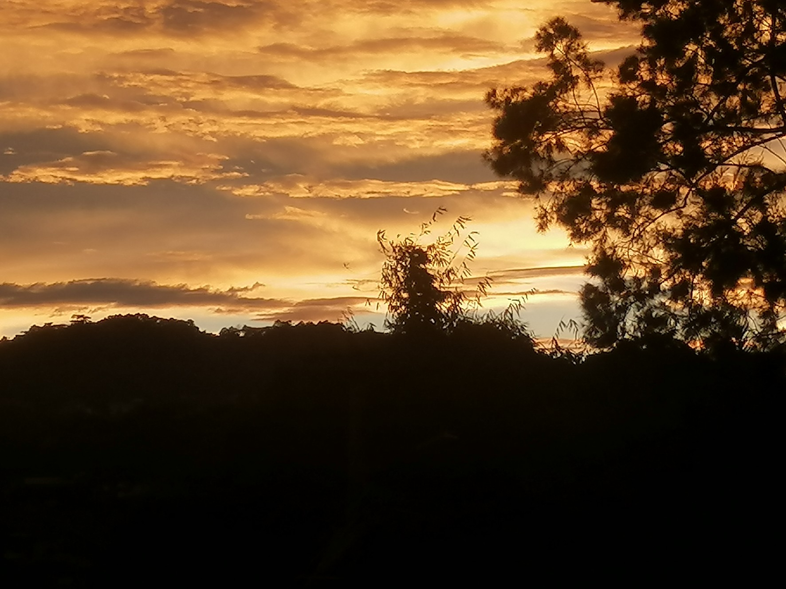

Horizon Hues
Educational
During sunset, the light from the sun must pass through a greater area of the atmosphere, which results in an even greater scattering of blue light. As red has the longest wavelength of visible light, a greater proportion of red light reaches the Earth. Thus, the sun and sky appear a red color during sunsets.
With this in mind, we shoud take the time to appreciate the skyline hues whenever a sunset dawns. For there's a lot of science hidden in the beauty, we justneed to seek those bits of knowledge out.